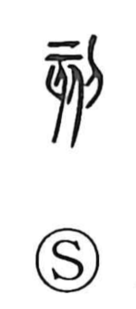

刻

Uncategorized
Kun: kizamu | On: koku
to carve ・ to engrave ・ strict ・ harsh ・ time ・ hour
Explanation
刻 is a phono-semantic character built on the knife radical 刀 and the phonetic 亥. Shirakawa notes that 亥, seen also in words like 骸 and 核, evokes something whose inner framework is laid bare. Because 亥 originally depicted an animal, the graph pictures slicing up an animal carcass with a knife—hence the core sense “to cut finely, to engrave.” From the image of flaying and stripping flesh came associations of severity and harshness. And since time was once reckoned by incising notches on instruments, the character naturally extended to mean “time, hour,” as in jikoku.